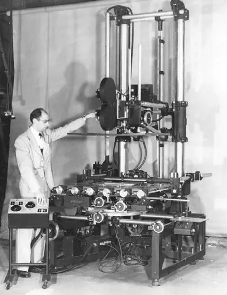

История анимации
Первые шаги в анимации были сделаны ещё до изобретения братьями Люмьер кинематографа. В первой половине XIX века бельгийский физик Жозеф Плато, австрийский профессор-геометр Симон фон Штампфер
и другие учёные и изобретатели использовали для воспроизведения на экране движущихся изображений вращающийся диск или ленту с рисунками, систему зеркал и источник света (фонарь) — фенакистископ
и стробоскоп. Дальнейшее развитие этой технологии в сочетании с фотографией привело к изобретению киноаппарата, и в свою очередь создало технологическую основу для изобретения братьями Люмьер
кинематографа.
30 августа 1877 года считается днём рождения рисованной мультипликации — было запатентовано изобретение Эмиля Рейно.
28 октября 1892 года — Эмиль Рейно демонстрирует в парижском Музее Гревен первую графическую ленту с помощью аппаратов «оптический театр», действующих иначе, чем кинопроектор — до изобретения кинематографа.
1898 год — Джеймс Стюарт Блэктон и Альберт Э. Смит сняли первый мультипликационный кукольный фильм «Цирк лилипутов». В фильме использовались деревянные игрушки.
1899 год — снят первый сохранившийся мультипликационный рекламный ролик Matches: An Appeal.
1900 год — Джеймс Стюарт Блэктон создает фильм «Очарованный рисунок», в котором ещё не было промежуточных фаз. В этот период он открывает секрет мультипликации, покадровой мультипликационной съемки — изображение за изображением, которая в США получила название «One turn, one picture».
28 октября 1892 года — Эмиль Рейно демонстрирует в парижском Музее Гревен первую графическую ленту с помощью аппаратов «оптический театр», действующих иначе, чем кинопроектор — до изобретения кинематографа.
1898 год — Джеймс Стюарт Блэктон и Альберт Э. Смит сняли первый мультипликационный кукольный фильм «Цирк лилипутов». В фильме использовались деревянные игрушки.
1899 год — снят первый сохранившийся мультипликационный рекламный ролик Matches: An Appeal.
1900 год — Джеймс Стюарт Блэктон создает фильм «Очарованный рисунок», в котором ещё не было промежуточных фаз. В этот период он открывает секрет мультипликации, покадровой мультипликационной съемки — изображение за изображением, которая в США получила название «One turn, one picture».
1906 год — американская компания Vitagraph Company of America выпускает один из первых мультипликационных фильмов Джеймса Стюарта Блэктона, снятых на киноплёнку, — «Комические фазы смешных лиц»,
представлявшая собой серию простеньких рисунков с изображением забавных гримас.
1908 год — французский художник-карикатурист Эмиль Коль начинает активно заниматься графической мультипликацией. Он создал мультипликационный фильм «Фантасмагория». Этот фильм стал знаковым для развития мультипликации не только тем, что был первым европейским мультфильмом, но и потому, что именно в нём впервые был структурированный самодостаточный сюжет, а главный герой Фантош был наделен определённым характером.
1910 — Владислав Александрович Старевич снял первый в мире объемный мультфильм «Прекрасная Люканида, или Война рогачей с усачами».
1911 — 1922 годы — в США художник-карикатурист Уинзор Маккей поднимает рисованную мультипликацию на новый уровень качества, в 1914 году создаёт прообраз мультсериала с общим мультперсонажем (Gertie the Dinosaur), а в 1918 году снимает документальный мультфильм «Гибель „Лузитании“».
1908 год — французский художник-карикатурист Эмиль Коль начинает активно заниматься графической мультипликацией. Он создал мультипликационный фильм «Фантасмагория». Этот фильм стал знаковым для развития мультипликации не только тем, что был первым европейским мультфильмом, но и потому, что именно в нём впервые был структурированный самодостаточный сюжет, а главный герой Фантош был наделен определённым характером.
1910 — Владислав Александрович Старевич снял первый в мире объемный мультфильм «Прекрасная Люканида, или Война рогачей с усачами».
1911 — 1922 годы — в США художник-карикатурист Уинзор Маккей поднимает рисованную мультипликацию на новый уровень качества, в 1914 году создаёт прообраз мультсериала с общим мультперсонажем (Gertie the Dinosaur), а в 1918 году снимает документальный мультфильм «Гибель „Лузитании“».

1911 — Уинзор Маккей создал фильм «Маленький Немо» на основе газетного комикса.
1913 — Старевич создает мультфильм «Стрекоза и муравей». Данная экранизация басни Крылова имела грандиозный успех и мировую популярность.
В 1914 году Уинзор Маккей создаёт первого в истории героя мультфильма, наделённого яркими личностными качествами — динозавра Герти. Огромное количество рисунков, сделанных для фильма, потребовали изобрести новую технологию кинематографического производства, впервые приведя к разделению труда между художником-мультипликатором и художником-фоновщиком: в то время как Маккей прорисовывал фазы движения динозавра, нанятый им студент копировал с образца на каждый лист контуры гор, озера и дерева. Таким образом, можно считать, что первичным способом кинематографической мультипликации была тотальная мультипликация.
1913 — Старевич создает мультфильм «Стрекоза и муравей». Данная экранизация басни Крылова имела грандиозный успех и мировую популярность.
В 1914 году Уинзор Маккей создаёт первого в истории героя мультфильма, наделённого яркими личностными качествами — динозавра Герти. Огромное количество рисунков, сделанных для фильма, потребовали изобрести новую технологию кинематографического производства, впервые приведя к разделению труда между художником-мультипликатором и художником-фоновщиком: в то время как Маккей прорисовывал фазы движения динозавра, нанятый им студент копировал с образца на каждый лист контуры гор, озера и дерева. Таким образом, можно считать, что первичным способом кинематографической мультипликации была тотальная мультипликация.
Мультипликация стала частью кинематографа, заняв в нём прочное место как один из жанров. Для изготовления мультфильмов использовались киносъёмочные аппараты, пригодные для покадровой съёмки на один из стандартных форматов киноплёнки.
Для создания рисованной мультипликации были созданы мультстанки, представлявшие собой сложную установку-репродуктор со специальным киносъёмочным аппаратом, как правило, имеющим конструкцию, сходную с аппаратами для комбинированной
съёмки и позволяющим регулировать угол раскрытия обтюратора и выполнять затемнения и наплывы. Такие аппараты выпускались в специальном исполнении для мультипликации, отличавшемся вертикальной установкой и специальной лупой-видоискателем
для удобства визирования из такого положения. Конструкция профессиональных мультстанков позволяла создавать многослойные изображения на отдельных носителях и включала в себя осветительное оборудование. В настоящее время для рисованной
анимации используется компьютер или мультстанок с цифровым фотоаппаратом.
Дальнейшему бурному развитию мультипликации способствовали не только фильмы, снятые ранее, но и развитие кинематографических технологий. Самым важным достижением в этой сфере стало открытие Рауля Барра — перфорированный целлулоид,
который позволил зафиксировать лист с рисунком при помощи штифтов.

1918 год — состоялась премьера первого полнометражного художественного мультфильма «Апостол» аргентинского режиссёра Квирини Кристиани.
1928 год — Уолт Дисней создает одного из самых популярных рисованных персонажей в истории мультипликации — Микки Мауса. В этот же год выходит его первый звуковой мультфильм «Пароходик Вилли».
1929 год — Уолт Дисней снимает «Танец скелетов» — первый из серии «Веселые симфонии». В целом приход Уолта Диснея в мультипликацию ознаменовался созданием одного из классических канонов, так называемой «диснеевской мультипликации».
1931 год — Квирини Кристиани ставит первый полнометражный звуковой мультфильм «Рeludopolis».
1932 год — первый цветной мультфильм «Цветы и деревья» Уолта Диснея.
1936 год — в СССР основана киностудия «Союзмультфильм».
1928 год — Уолт Дисней создает одного из самых популярных рисованных персонажей в истории мультипликации — Микки Мауса. В этот же год выходит его первый звуковой мультфильм «Пароходик Вилли».
1929 год — Уолт Дисней снимает «Танец скелетов» — первый из серии «Веселые симфонии». В целом приход Уолта Диснея в мультипликацию ознаменовался созданием одного из классических канонов, так называемой «диснеевской мультипликации».
1931 год — Квирини Кристиани ставит первый полнометражный звуковой мультфильм «Рeludopolis».
1932 год — первый цветной мультфильм «Цветы и деревья» Уолта Диснея.
1936 год — в СССР основана киностудия «Союзмультфильм».

1937 год — первый цветной мультфильм СССР «Сладкий пирог». Уолт Дисней в фильме «Старая мельница» впервые использовал камеру, которая позволяла получить глубокую перспективу. В этом же году Дисней выпустил свой
первый полнометражный мультфильм — «Белоснежка и семь гномов» по сказке братьев Гримм. «Белоснежка» принесла Диснею огромный успех: всемирную популярность, свыше 8 млн долларов дохода и
восторженные отклики в профессиональной прессе.
1940 год — Уильям Ханна и Джозеф Барбера, позднее создавшие студию «Ханна-Барбера», начинают работу над серией мультфильмов «Том и Джерри».
1943 год — премьера цветного мультфильма Поля Гримо «Чучело».
1947 год — первый телевизионный мультсериал «Кролик-крестоносец» Алекса Андерсона и Джея Барда. Мультипликация начинает часто использоваться в телевизионной рекламе.
1952 год — первый французский рисованный полнометражный мультфильм «Пастушка и Трубочист» Поля Гримо.
1940 год — Уильям Ханна и Джозеф Барбера, позднее создавшие студию «Ханна-Барбера», начинают работу над серией мультфильмов «Том и Джерри».
1943 год — премьера цветного мультфильма Поля Гримо «Чучело».
1947 год — первый телевизионный мультсериал «Кролик-крестоносец» Алекса Андерсона и Джея Барда. Мультипликация начинает часто использоваться в телевизионной рекламе.
1952 год — первый французский рисованный полнометражный мультфильм «Пастушка и Трубочист» Поля Гримо.
1956 год — создаётся студия мультипликационных фильмов в г. Загребе. Первым фильмом «Загребской школы» стал короткометражный «Веселый робот».
1958 год — усилиями Осаму Тэдзуки в Японии создаётся уникальный классический стиль рисованной мультипликации — аниме.
1960 год — начало производства сериала «Флинстоуны», который показывался на американском телевидении. Это был первый мультипликационный сериал для взрослых.
1967—1971 годы — первый многосерийный цикл советских мультфильмов «Маугли», режиссёр: Роман Давыдов.
1969 год — в фильме Романа Качанова «Крокодил Гена» впервые появляется визуальный образ Чебурашки.
1983 год — фильм «Танго» поляка Збигнева Рыбчинского получил «Оскар» в категории короткометражных мультипликационных фильмов.
1958 год — усилиями Осаму Тэдзуки в Японии создаётся уникальный классический стиль рисованной мультипликации — аниме.
1960 год — начало производства сериала «Флинстоуны», который показывался на американском телевидении. Это был первый мультипликационный сериал для взрослых.
1967—1971 годы — первый многосерийный цикл советских мультфильмов «Маугли», режиссёр: Роман Давыдов.
1969 год — в фильме Романа Качанова «Крокодил Гена» впервые появляется визуальный образ Чебурашки.
1983 год — фильм «Танго» поляка Збигнева Рыбчинского получил «Оскар» в категории короткометражных мультипликационных фильмов.
1988 год — вышел двухсерийный мультфильм «Остров сокровищ». Также в этом году основана первая в СССР негосударственная мультипликационная студия «Пилот».
1990 год — начинается выпуск сериала «Симпсоны».
1993 год — «Кодак» вводит систему «Сineon» — первый полный комплект оборудования для создания спецэффектов.
1995 год — первый полнометражный компьютерный мультипликационный фильм — «История игрушек».
В 1999 году мультфильм «Старик и море» режиссёра Александра Петрова стал первым в истории кино мультфильмом для кинотеатров большого формата IMAX. В 2000 году этот же мультфильм был удостоен премии Американской киноакадемии «Оскар».
1990 год — начинается выпуск сериала «Симпсоны».
1993 год — «Кодак» вводит систему «Сineon» — первый полный комплект оборудования для создания спецэффектов.
1995 год — первый полнометражный компьютерный мультипликационный фильм — «История игрушек».
В 1999 году мультфильм «Старик и море» режиссёра Александра Петрова стал первым в истории кино мультфильмом для кинотеатров большого формата IMAX. В 2000 году этот же мультфильм был удостоен премии Американской киноакадемии «Оскар».